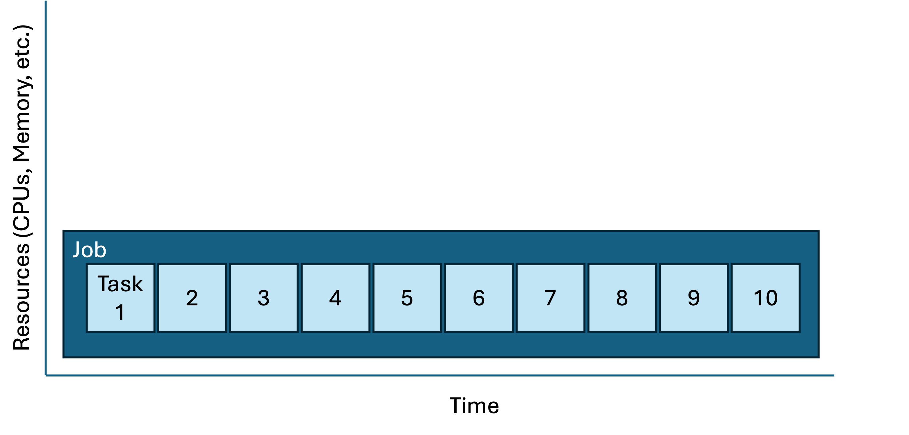

Intro to workflow automation
UM Bioinformatics Core
By the end of this module, we will:
- Understand what workflow automation is and how it helps reproducibility.
- Review several different ways to execute repetitive tasks on Great Lakes.
- Introduce the idea of job/task geometries to visualize advantages and limitations of various approaches.
Workflow automation helps reproducibility
Data-intensive research entails transforming raw data into more meaningful/valuable results. Often, this involves a series of step-wise transformation tasks. To make this research reproducible by someone else, all the transformations must either be documented so that a human can reproduce them, or automated so a computer can. A reproducible solution has a blend of documentation and automation.
Data-intensive research often involves repeating transformation tasks many times. Also over time, transformations evolve to be more complex, more computationally demanding, or take longer. A workflow describes the key transformation tasks and their relationships to the inputs and outputs.
Workflow automation describes the tools and techniques to systematically assemble these tasks into an executable, repeatable, robust solution. Building an automated workflow may appear to be harder than documenting it so that it can be run manually, but there are many benefits to automation:
- Automation facilitates repetition.
- Automation can simplify manual documentation.
- Automation simplifies validation of your workflow.
- Automation streamlines sharing.
- Automation scales to larger inputs.
Consider a simple workflow
There are many ways to build an automated workflow. In this module we will consider several ways of executing pleasingly parallel tasks on Great Lakes:
- A serial task loop
- Parallelizing tasks using driver scripts and sbatch files.
- The SLURM Launcher
All these approaches execute the same workflow in different ways. This workflow produces word pangrams. A word pangram is like an anagram that allows repeating letters, e.g. the sequence of letters ACEHMNT can be rearranged to create the pangrams ATTACHMENT, CATCHMENT, ENCHANTMENT, and ENHANCEMENT.
For this example, the workflow is a single program that accepts a text file containing list of letter sequences separated by lines; for each letter sequence it produces a file containing one or more pangrams.

Pangram: A serial task loop
# Orient on project pangram
cd /nfs/turbo/umms-bioinf-wkshp/workshop/home/$USER
cd workflows/project_pangrams
ls -1pangram_launcher pangram_parallel_sbatch pangram_serial_loop README.md
cd pangram_serial_loop
ls -1find_pangrams.sbat find_pangrams.sh letters.txt pangram.sh README.md
Let’s consider a few of these files in turn, starting with the README.
| README.md |
|---|
# pangram_serial_loop - Produces pangrams for inputs in letters.txt. Makes one file for each line in letters. - cgates 6/1/2024 - Usage: ./find_pangrams.sh #to run locally or sbatch find_pangrams.sbat # to submit to worker node Files: - find_pangrams.sbat: SLURM batch file; calls find_pangrams.sh - find_pangrams.sh: Loops throught input and calls pangram.sh - letters.txt: list of letter sequences seperated by newlines. - pangram.sh: accepts a single letter sequence and prints all pangrams. |
The pangram.sh script is the workhorse of this workflow. You are welcome to look at the implementation, but for our purposes we can treat it as a black box. We’ll run it once to see it in action.
./pangram.sh lovelylovely lovey volley
Consider the input to the workflow:
| letters.txt |
|---|
|
And finally, the script we will launch to execute the workflow:
| find_pangrams.sh |
|---|
|
Having reviewed the inputs and scripts, we can launch the workflow like as shown below. (This project is called “serial loop” because in this workflow we are looping over the inputs and processing one at a time.)
./find_pangrams.shpangrams for: Ndefglu pangrams for: Hacilno pangrams for: Tdghnou pangrams for: Nailmpt pangrams for: Pbegikn pangrams for: Yacilrt pangrams for: Achnopy pangrams for: Uginoqt pangrams for: Eachkmn pangrams for: Alhyidn
We see the results files have been added:
lsfind_pangrams.sbat results.Achnopy.txt results.Ndefglu.txt find_pangrams.sh results.Alhyidn.txt results.Pbegikn.txt letters.txt results.Eachkmn.txt results.Tdghnou.txt pangram.sh results.Hacilno.txt results.Uginoqt.txt README.md results.Nailmpt.txt results.Yacilrt.txt
cat results.Achnopy.txtcacophony
Question: Which letter combination generated the most pangrams?
Let’s run it again but instead of using the login-node, we’ll submit this to a worker node using the provided sbat script:
# first clear out the old results
rm results.*
sbatch find_pangrams.sbat Submitted batch job 1234567
Use squeue -u $USER to see when the job is finished and
then review the outputs. We now see the results files and also the slurm
log file:
find_pangrams.sbat results.Alhyidn.txt results.Tdghnou.txt find_pangrams.sh results.Eachkmn.txt results.Uginoqt.txt letters.txt results.Hacilno.txt results.Yacilrt.txt pangram.sh results.Nailmpt.txt slurm-1234567.out README.md results.Ndefglu.txt results.Achnopy.txt results.Pbegikn.txt
This approach is correct, clear, and reproducible; however it’s not ideal. Consider how the tasks are contained within a job:
| Job/task geometry of the serial loop approach |
|---|
|  |
|
Each sbatch request is a job script; a job script may be composed of multiple tasks. Key attributes of a job script are
You can represent these graphically by making boxes for each job and their tasks (height = resource request and length = time). In the case above, there are many similar tasks contained in a single job. This diagram is a rough representation of the job/task geometry. This is a useful way of visualizing and comparing approaches; also, the job geometry is critically useful information to the scheduler which is trying to pack everyone’s jobs into the available clusters as neatly/efficiently as possible. |
Considering that each of these pangram tasks are completely independent of each other (i.e. pleasingly parallel). We might be able to make better use of our ~16000 CPUs by parallelizing the workflow. The approaches below show two different ways to accomplish this.
Pangram: Parallel SBATCH
# Orient on project
cd /nfs/turbo/umms-bioinf-wkshp/workshop/home/$USER
cd workflows/project_pangrams/pangram_parallel_sbatch
ls -1letters.txt make_sbat_scripts.sh pangram.sh README.md run_sbat_scripts.sh
| README.md |
|---|
# pangram_parallel_sbatch - Produces pangrams for letters.txt. Makes one file per line in letters. - cgates 6/1/2024 - Usage: `./make_sbat_scripts.sh` `./run_sbat_scripts.sh` Files: - letters.txt: list of letter sequences seperated by newlines. - pangram.sh: accepts a single letter sequence and prints all pangrams. - make_sbat_scripts.sh : Build sbat scripts based on letters.txt; for each row in letters.txt adds a new sbat file. - run_sbat_scripts.sh : Submit all sbat scripts for cluster execution |
Executing make_sbat_scripts creates a new directory and adding a collection of sbat files.
./make_sbat_scripts.sh
ls sbat_scripts... Achnopy.sbat Nailmpt.sbat Uginoqt.sbat Alhyidn.sbat Ndefglu.sbat Yacilrt.sbat Eachkmn.sbat Pbegikn.sbat Hacilno.sbat Tdghnou.sbat
Consider a single sbat file.
| sbat_scripts/Achnopy.sbat |
|---|
#!/bin/bash #SBATCH --job-name=pangram_Achnopy #SBATCH --cpus-per-task=1 #SBATCH --nodes=1 #SBATCH --ntasks-per-node=1 #SBATCH --mem-per-cpu=400m #SBATCH --time=00:05:00 #SBATCH --account=bioinf_wkshp_class #SBATCH --partition=standard ./pangram.sh Achnopy > results.Achnopy.txt |
Briefly consider the script to see how these sbat files was constructed. Note the SLURM preamble directives are integrated into the new files using a HereDoc.
| make_sbat_scripts.sh |
|---|
#!/bin/bash
set -eu
mkdir -p sbat_scripts
for letters in $(cat letters.txt); do
echo sbat for: $letters >> /dev/stderr
cat << HERE_DOC > sbat_scripts/$letters.sbat
#!/bin/bash
#SBATCH --job-name=pangram_${letters}
#SBATCH --cpus-per-task=1
#SBATCH --nodes=1
#SBATCH --ntasks-per-node=1
#SBATCH --mem-per-cpu=400m
#SBATCH --time=00:05:00
#SBATCH --account=bioinf_wkshp_class
#SBATCH --partition=standard
./pangram.sh $letters > results.${letters}.txt
HERE_DOC
done
echo done >> /dev/stderr
|
We can submit jobs one at a time using sbatch. OR we could build a
for loop to automate submission; conveniently
run_sbat_scripts.sh has done this for us.
| run_sbat_scripts.sh |
|---|
for sbat in $(ls sbat_scripts/*.sbat); do sbatch $sbat done |
Before we execute run_sbat_scripts.sh, you might
consider opening a separate window to monitor the SLURM job queue. In
this second window, you can execute watch squeue -u $USER
to see how the jobs are being scheduled. Hit ctrl-C to exit watch. (More
info on watch.)
./run_sbat_scripts.sh Submitted batch job 9289496 Submitted batch job 9289497 Submitted batch job 9289498 Submitted batch job 9289499 Submitted batch job 9289500 Submitted batch job 9289501 Submitted batch job 9289502 Submitted batch job 9289503 Submitted batch job 9289504 Submitted batch job 9289505
And in a few short seconds, you see the results and SLURM log files. This approach is correct, more complex than the serial loop, and reproducible. And because the tasks are working in parallel, it’s much faster. Contrast this job/task geometry with the serial loop approach from above:
| Job/task geometries: serial loop vs parallel sbatch |
|---|

|

|
This is great. But there’s two to three minor drawbacks to this approach:
- Between the the sbat files, the result files, and the slum log files, it’s created quite a lot more files. They are smallish files, but it’s more output to keep track of.
- When the scheduler is under a heavy load, for very quick jobs (<=60 seconds) it can take longer to schedule a job than it takes to run the job. In these circumstances the serial approach might be faster. (If we scaled up from 10 jobs to 1000 jobs in parallel, we might see this kind of slowdown.)
- Each ARC account has an upper limit on the number of jobs that can be submitted and the number actively running. If your account exceeds this limit the jobs will start to queue up, awaiting a turn at scheduling and execution. That’s not a big problem, except for the fact that you share the account with other users. If you saturate your queue, others will have to wait until your job finishes before starting theirs.
To address these concerns, the Texas Advanced Computing Center built a SLURM tool called launcher detailed below.
Pangram: Launcher
# Orient on project
cd /nfs/turbo/umms-bioinf-wkshp/workshop/home/$USER
cd workflows/project_pangrams/pangram_launcher
ls -1launcher.sbat letters.txt make_launcher_tasks.sh pangram.sh README.md
| README.md |
|---|
# pangram_launcher - Produces pangrams for letters.txt. Makes one file per line in letters. - cgates 6/1/2024 - Usage: `./make_launcher_tasks.sh` `sbatch launcher.sbat` Files: - launcher.sbat: sbatch file to start the launcher. - letters.txt: list of letter sequences seperated by newlines. - make_launcher_tasks.sh: builds a single file for all tasks to be executed by the launcher. - pangram.sh: accepts a single letter sequence and prints all pangrams. |
Run make_launcher_tasks.sh and note it creates one new
file launcher_tasks.txt.
./make_launcher_tasks.sh | launcher_tasks.txt |
|---|
./pangram.sh Ndefglu > results.Ndefglu.txt ./pangram.sh Hacilno > results.Hacilno.txt ./pangram.sh Tdghnou > results.Tdghnou.txt ./pangram.sh Nailmpt > results.Nailmpt.txt ./pangram.sh Pbegikn > results.Pbegikn.txt ./pangram.sh Yacilrt > results.Yacilrt.txt ./pangram.sh Achnopy > results.Achnopy.txt ./pangram.sh Uginoqt > results.Uginoqt.txt ./pangram.sh Eachkmn > results.Eachkmn.txt ./pangram.sh Alhyidn > results.Alhyidn.txt |
This might remind you of the serial loop approach, but there’s a
twist and to see it you need to consider the launcher.sbat
file:
| launcher.sbat |
|---|
#!/bin/bash #SBATCH --account=bioinf_wkshp_class #SBATCH --partition=standard #SBATCH --nodes=1 #SBATCH --ntasks-per-node=5 #SBATCH --cpus-per-task=1 #SBATCH --time=0:30:00 module load launcher export LAUNCHER_JOB_FILE=launcher_tasks.txt paramrun |
|
Some details:
|
Given this setup, sbatch will allocate a node with 5 CPUs for 30 minutes. Then the launcher will start looping through the launcher_tasks and as each one completes it will send another one through until all tasks are complete.
Consider running watch squeue -u $USER in another window
before you run the sbatch command:
sbatch launcher.sbatSubmitted batch job 9290535
Note that all the tasks are running but they are running “inside”” of
the one job. The job should finish in a few seconds. It will produce the
familliar results.* files and also a single SLURM log file
which is a bit more interesting than the previous log files.
| slurm-9290535.out |
|---|
WARNING (06/09/24 15:38:39): LAUNCHER_WORKDIR variable not set. Using current directory. windowsP is false NOTE (06/09/24 15:38:40): Started dynamic task service on port 9471 Launcher: Setup complete. ------------- SUMMARY --------------- Number of hosts: 1 Working directory: /nfs/turbo/umms-bioinf-wkshp/workshop/home/cgates/project_pangrams/pangram_launcher Processes per host: 5 Total processes: 5 Total jobs: 10 Scheduling method: dynamic ------------------------------------- Launcher: Starting parallel tasks... using /tmp/launcher.9290535.hostlist.GYzdOWsB to get hosts starting job on gl3079 Warning: Permanently added the ED25519 host key for IP address '10.164.8.129' to the list of known hosts. Launcher: Task 0 running job 1 on gl3079.arc-ts.umich.edu (./pangram.sh Ndefglu > results.Ndefglu.txt) Launcher: Job 1 completed in 1 seconds. Launcher: Task 0 running job 2 on gl3079.arc-ts.umich.edu (./pangram.sh Hacilno > results.Hacilno.txt) Launcher: Task 2 running job 3 on gl3079.arc-ts.umich.edu (./pangram.sh Tdghnou > results.Tdghnou.txt) Launcher: Job 3 completed in 1 seconds. ... Launcher: Task 0 done. Exiting. Launcher: Done. Job exited without errors |
The launcher solution is correct, clear, and efficient. It is a very nice option if you have many independent tasks that each run quickly (<=60 seconds) and each tasks has a modest compute request (e.g. each task needs a single CPU).
Geometries and dependencies
| Job/task geometries compared |
|---|
|
|
|
|

|
The three job geometries diagrammed above hint that we quietly made a a few simplifying assumptions along the way:
- We assumed that all the tasks were independent (and thus pleasingly parallel).
- We assumed that all the tasks in a workflow were the same transformation applied many different inputs.

Also steps in a workflow often have variable resrouce needs and run times:

The techniques we reviewed above are execllent for smaller, simpler workflows, a more complex, more resource intensive workflow will require either a much more nuanced set of scripts or a more sophisticated approach altogether. SLURM supports these more complex scenarios natively with something called job arrays (see job arrays in links below). In the next module, we introduce the Snakemake workflow automation framework to address these more complicated scenarios.
Pro tips
Automating workflows is a learning process. Here’s a few ideas to consider along the way:
Do not try to automate something that you cannot do by hand.
Make it right. Make it clear. Make it efficient. (In that order.)
Build a README for each workflow. Consider including:
- Your name/email
- The date
- How to install the workflow
- How to run the workflow
- Any necessary context/constraints that would help your future collaborator reproduce your results.
Automate the workflow with the data you have. Don’t generalize a workflow too soon. You might see that a workflow could be parameterized/extended to apply to new types of data. Feel that excitement, note the opportunity in the README, and trust that you will make that change when you need to.
Instead of developing the whole workflow end to end, consider an iterative and incremental approach.
Break workflow development into steps:
- do part of the workflow for one sample and verify correctness as you add steps. (For a large dataset consider subsetting/downsampling your inputs so you can iterate quicker.)
- run a single sample end to end
- scale to a few samples and check those outputs; tune resource allocations
- run the whole batch
Exercise: Project Railfence
This project is focused around a transformation that can encode or decode a specific kind of encryption called a rail fence cipher. The details of this encryption are interesting and I encourage you to check out the link, but for the purposes of this exercise it’s ok to treat it as magic/black-box transformation.
Review the project directory here:
cd /nfs/turbo/umms-bioinf-wkshp/workshop/home/$USER
cd workflows/project_railfence
ls -1codes.txt railfence_decode.py railfence_encode.py README.md
The railfence_decode.py script accepts two arguments
separated by a comma:
- a number (a positive integer)
- a quoted string (the cipher text)
It returns the decoded clear text. You can run the railfence_decode.py script like so:
# need to load python once in the session
module load python
./railfence_decode.py 3,"wrivdetceaedsoee-lea ne crf o!"There is a list of encrypted codes in thewe are discovered-flee at once!
codes.txt file:
| codes.txt |
|---|
2,"onttyt uoaesmtigta o antd yhn"d o r oatmt oehn htyucno ob ad 3,"e hM craifi.nar.mk trgt aei la.Mk tefcet I htodr)aii.kte e in(t e" 4,"aefie aamth klwth ayhvuoetwro htdto et ow au" 5,"rrnmpce eaadeeap"odatt rn rhniniieictlocs vnaa 3,"t DwieaRAM"r EE 3,"lsie"m! |
Your task:
- Consider the three automation approaches outlined in the lessons above: serial loop, parallel batch, and launcher.
- Choose one approach, and, using the patterns above as a template,
create script(s) that will decrypt the codes in
code.txt. - If you complete the exercise with a one approach, repeat the exercise with a different approach.
Key ideas
- Achieving reproducible research requires a blend of documentation and automation.
- Be kind to your future self; they will thank you for the README you left them.
- Automation helps reproducibility:
- Automation shrinks your README.
- Automation simplifies validation of your workflow.
- Automation enables repetition.
- Automation streamlines sharing.
- Automation scales to larger inputs
- Job/task geometries help visualize how different approaches are executed. (It also hints at the n-dimensional game of Tetris the job-scheduler is playing to pack everyones jobs as neatly as possible.
- The SLURM launcher allows you to gather many parallel tasks into a main job, in effect creating a transient sub-cluster within the main HPC.
- For a more complex transformation, ascript can be either simple or resource efficient - choose one. Consider more robust solutions (e.g. Snakemake) as necessary.
Links and references
UM ITS docs on launcher
UM ARC docs on job arrays
SLURM docs on job arrays
UM ARC miVideo on advanced SLURM techniques (including launcher, job arrays, and more)
For more examples of pangrams in action, checkout:
| Previous lesson | Top of this lesson | Next lesson |
|---|